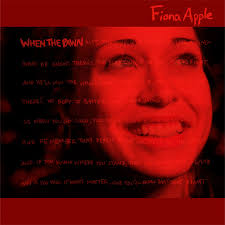
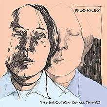
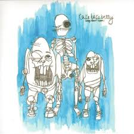
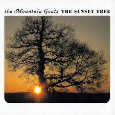
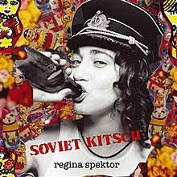

My Current Favorite Albums
These are my top 5 albums currently, it changes pretty often but these are the ones I have either recently discovered, or have just been listening to a lot lately.
1. When The Pawn-- Fiona Apple
When the Pawn by Fiona Apple is a deeply emotional and introspective album, filled with raw, poetic lyrics and a blend of jazz, pop, and alternative sounds. It's a great chamber pop album, which- looking at this list- seems to be a theme.
2. The Execution of All Things-- Rilo Kiley
I recently discovered Rilo Kiley but I have basically had this album on repeat.The Execution of All Things by Rilo Kiley is an indie pop album that blends heartfelt lyrics with catchy, lo-fi melodies. I especially like the vocal style of Jenny Lewis, and the simplicity in a lot of the songs.
3.Songs About Teeth!--Cake Bake Betty
Songs About Teeth by Cake Bake Betty is a quirky, indie folk album filled with gentle melodies and poetic lyrics. I really think this album is super underrated, and if you like Regina Spektor I think you should definately check this album out.
4. The Sunset Tree-- The Mountain Goats
The Mountain Goats have now made three appearances on this website! I will clarify, I'm aware the very nasally, whiny vocal style isn't everyones cup of tea, and can turn a lot of people away from this band, but if you can get past that their lyrics and melodies hold a lot of value. The Sunset Tree is their second most popular album for a good reason. This album is very story driven and tells a very emotionally impactful story.
5. Soviet Kitsch-- Regina Spektor
Soviet Kitsch by Regina Spektor is a quirky and eclectic album that blends indie pop, classical influences, and a touch of Eastern European flair. The album showcases Spektor's unique voice and offbeat songwriting, with songs that range from playful to deeply introspective. The combination of imaginative lyrics, whimsical melodies, and Spektor’s distinctive piano-driven style creates a captivating and memorable listening experience.